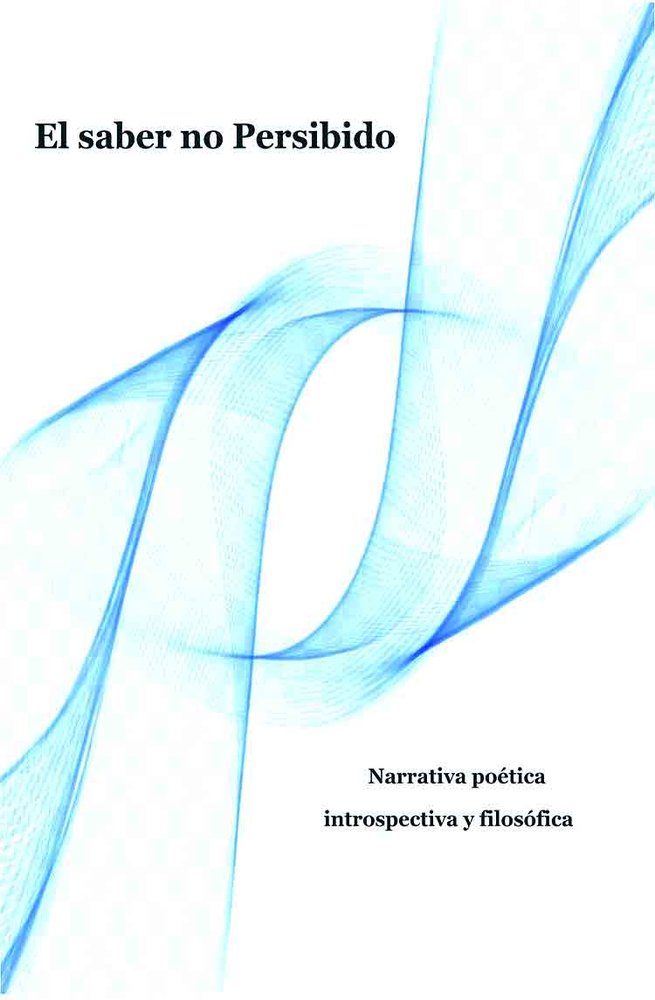

Obras del Autor
Crónicas de la Expiación
En un mundo donde los sentimientos son mercancía y el dolor se transa como activo financiero. Crónicas de la Expiación nos sumerge en una alegoría inquietante sobre la ética, la memoria y la resistencia.
A través de una prosa poética y penetrante, se construye la historia de Alba, una joven que desafía el sistema de tasación emocional instaurado por el enigmático Corredor de Almas. Esta obra no es solo una fantasía filosófica:
Es una exploración crítica del modo en que la sociedad etiqueta, archiva y monetiza nuestras emociones más humanas. Entre espejos rotos, bolsas de pecado y flores que no cotizan, la novela propone una pregunta radical:
¿queda algo en nosotros que aún no tenga precio? Ideal para lectores que buscan una experiencia narrativa simbólica, intensa y profundamente humana.
(Si estas con celular, clik en la imagen de portada)
El Derecho a Ser Incómodo
En tiempos donde el disenso se malinterpreta como violencia y la cortesía se vuelve anestesia.
El Derecho a Ser Incómodo emerge como un manifiesto valiente a favor del pensamiento libre. Con una prosa que combina poesía y lucidez, Ferré invita a recuperar la fricción como forma profunda de respeto, y la incomodidad como señal vital de conciencia activa.
Este libro no busca agradar, sino despertar. No pretende imponer verdades, sino habilitar preguntas que arden. Es un texto para quienes aún creen que pensar —sin pedir disculpas— es un acto de dignidad.
Un llamado íntimo y colectivo a no ceder ante la suavidad decorativa que a menudo encubre la rendición interior.
(Si estas con celular, clik en la imagen de portada)

El Saber No Percibido
Un viaje introspectivo que explora cómo nuestras propias creencias, miedos y silencios construyen límites internos.
Con un estilo poético y meditativo, el autor nos invita a reconocer la vulnerabilidad, aceptar la sombra y encontrar sabiduría en lo simple.
Más que respuestas, este libro ofrece una mirada honesta hacia uno mismo y propone un camino de conciencia, paso a paso, sin adornos, pero lleno de sentido.
Para leerlo, clik en la imagen de portada